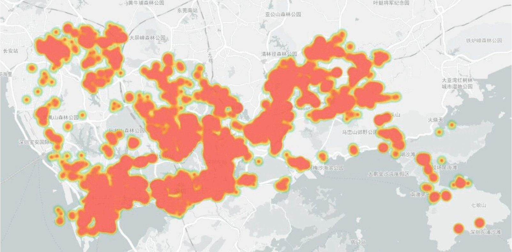

|
News
2023-12: One paper on topological data analysis got accepted by AAAI 2024.
2023-07: We are hosting a Volunteer Behavior Prediction Data Challenge at IEEE MLSP 2023. See the Challenge Website for details!
2022-03: Our paper “Optimising Self-organized Volunteer Behaviors during COVID-19 Pandemic” is now open access on the Nature website. Check out the project website for the code and interactive demo.
|
|
Publications [ Full List ]
(*Equal Contribution)
|
|
|
Learning Persistent Community Structures in Dynamic Networks via Topological Data Analysis
Dexu Kong, Anping Zhang, Yang Li
The 38th Annual AAAI Conference on Artificial Intelligence (AAAI), 2024.
[arXiv]
[Code]
We proposed a novel deep graph clustering framework with temporal consistency regularization on inter-community structures, inspired by
the concept of minimal network topological changes within short intervals.
|
|

|
Volunteer Retention and Future Collaboration Prediction in Volunteer Crowdsourcing Platforms
Shutong Chen*, Anping Zhang*, Qiqi Chen*, Yang Li
2023 IEEE 33rd International Workshop on Machine Learning for Signal Processing (MLSP), 2023.
[Paper]
[Challenge Website]
The paper reports a data challenge that aims to develop models predicting volunteer retention and future collaborations
using a dataset from a mobile crowdsourcing platform in Shenzhen, China, with the participation and performance of several
teams evaluated through Kaggle.
|
|
|
Optimising self-organised volunteer efforts in response to the COVID-19 pandemic
Anping Zhang*, Ke Zhang*, Wanda Li, Yue Wang, Yang Li, Lin Zhang
Humanities and Social Sciences Communications, 2022.
[Paper]
[Project Page]
[Tsinghua News (in Chinese)]
[Tsinghua SIGS News]
A quantitive study on how volunteers collaborate to achieve rapid mobilisation during the COVID-19 outbreak, using the concept of self-organisation. It proposes a data-driven framework to investigate when and how self-organisation emerged during the pandemic response and how it relates to effectiveness of volunteer organisations in general.
|
|
Selected Honors and Awards
Best Poster Award in International Workshop on Learning and Information Theory 2023 (WOLIT'23), 2023.
Best Report & Distinguished Paper Award in the 706th Doctoral Forum of Tsinghua University, 2023.
The Second Prize Scholarship of SIGS, Tsinghua University, 2022.
Shortlisted for the academic representative of the year at University College London, 2020.
Bronze Certificate in the 46th International Chemistry Olympiad UK Round One, 2014.
Gold Certificate in UK Senior Mathematical Challenge 2013 with full mark 125/125 on the paper, 2013.
Gold Prize in The 28th China Adolescents Science & Technology Innovation Contest, 2013.
|
|